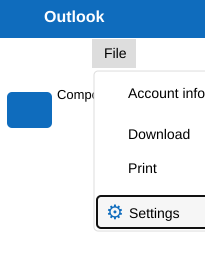
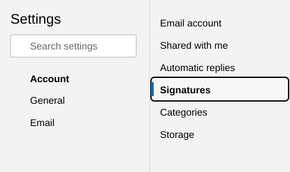
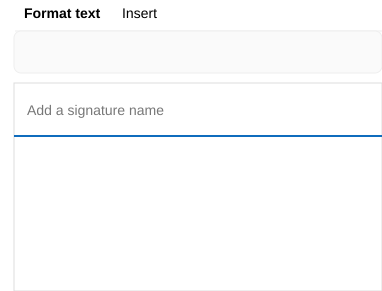
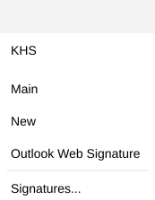

1
Open Settings from Outlook Web
In Outlook Web, select File in the top bar, then choose Settings from the menu.

Outlook Web guide
After you have used the builder and selected Copy signature, follow these steps to find the Signatures settings in Outlook Web, create a new signature, paste it, and save it.
In Outlook Web, select File in the top bar, then choose Settings from the menu.

In the Settings panel, select Account on the left. In the Account options, select Signatures.

Select Add signature to create a blank signature entry.
Click Add a signature name and type a clear name, such as Outlook Web Signature. Then click in the large blank editor area and paste the copied signature.

Select Save. Wait for Outlook to finish saving before leaving the Settings panel.
When composing an email, open the signatures menu and choose your new signature if it is not inserted automatically.
